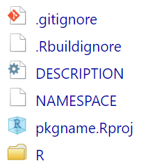
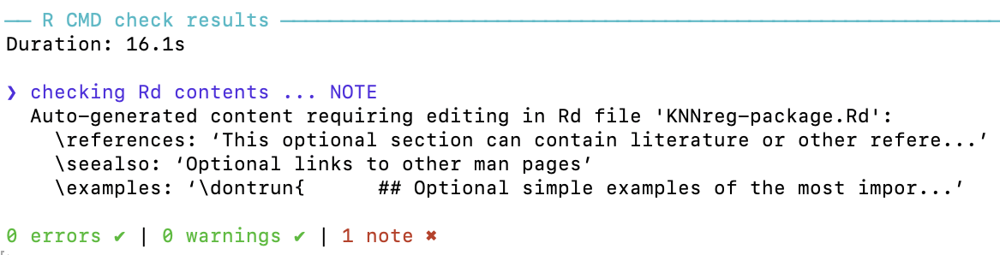
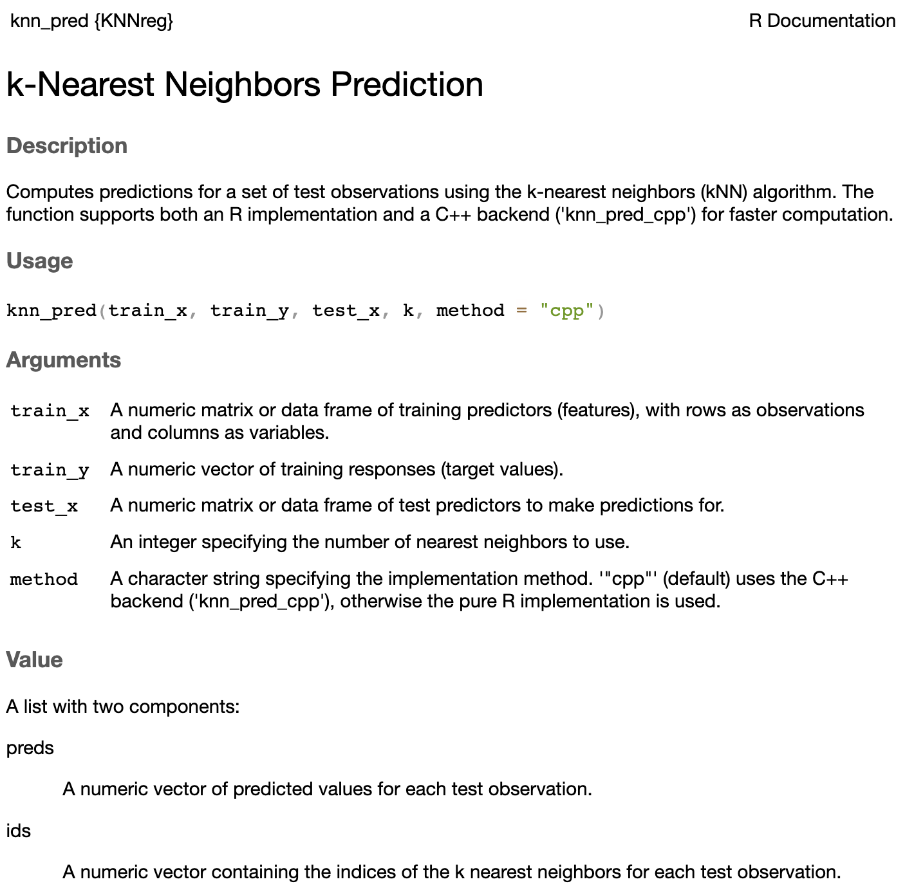

Short Course on R Tools
Develop your own professional R package
Marquette University
STAR-DS - SDSS 2026
Outline
- Why Build an R Package?
- System Setup
- Package Structure
- Package States in R
- Create a Package
- Functions & Documentation
- Writing Functions and Documenting
- Build a Simple Package from Scratch
📦 R Packages: The Fundamental Unit
In R, the fundamental unit of shareable code is the package.
A package bundles together:
- 🧑💻 Code
- 📊 Data
- 📚 Documentation
- 🧪 Tests
➡️ All in one place, easy to share with others.
📦 You Already Use Packages!
If you’re here, you already know how to work with packages:
🎯 Goal of This Talk
This workshop is about moving from using packages ➡️ to developing your own.
Why?
- 🚀 To share your code with others
- 📦 To make your code easy to install, use, and learn
- ⏳ To save yourself time with conventions and structure
System Setup
Make sure you have:
- 🛠 The latest version of R.
- 🛠 The latest version of RStudio.
📦 Key Packages
devtools: Simplifies package development by wrapping complex workflows into easy commandsroxygen2: Generates documentation from special comments in your function codetestthat: Provides a framework for unit testing and ensures your functions work correctly and safely over timeknitr: Powers dynamic report generation and vignette building that integrates code, results, and text using R Markdown
💡 These tools help automate, test, document, and share your package like a pro.
Package Structure
🧩 Directory layout
mypkg/
├── DESCRIPTION # Package metadata
├── NAMESPACE # Exported functions & imports
├── R/ # Your R functions
└── man/ # Auto-generated documentation💡 Tip: Many folders in an R package are optional and included as needed.
🧩 Directory layout
mypkg/
├── DESCRIPTION # Package metadata
├── NAMESPACE # Exported functions & imports
├── R/ # Your R functions
├── man/ # Auto-generated documentation
├── tests/ # Unit tests with testthat
├── vignettes/ # Long-form documentation (Rmd)
├── data/ # Data sets (.rda files)
└── inst/ # Installed files (e.g., app/, extdata/)🛠 Package States in R
R packages transition through five development states:
- 🗂️ Source: your raw package folder
- 📦 Bundled: compressed .tar.gz for sharing
- 🧱 Binary: platform-specific precompiled version
- 📚 Installed: available in your R library
- 🧠 In-Memory: actively loaded via library()
Understanding these states helps you manage installation, sharing, and usage workflows.
🗂️ Source Package
A source package is just a folder with a specific structure:
DESCRIPTIONfile
R/folder with.Rfiles
- Optional:
man/,tests/,vignettes/
It’s editable and human-readable — your starting point for development.
📦 Bundled Package
A bundled package is a compressed .tar.gz file created from a source package.
- Commonly called a source tarball
- Created using
devtools::build() - Platform-independent format for distribution
It acts as a transportable unit — not directly usable until installed.
🧱 Binary Package
A binary package is a platform-specific compiled package:
- Windows:
.zip - macOS:
.tgz - Created using
devtools::build(binary = TRUE)
Ideal for users without development tools — typically distributed by CRAN.
📚 Installed Package
An installed package is one that’s been unpacked and placed into a library folder.
- No longer a single file
- Ready to be loaded into memory
install.packages()ordevtools::install_*()bring packages into this state.
🔁 Transitioning Between States

Create a Package
Before creating your R package, you need to choose a name.
A valid R package name must:
- Contain only letters, numbers, and periods (
.) - Start with a letter
- Not end with a period
❌ You cannot use:
- Hyphens
- - Underscores
_
🛠️ Creating Your Package
Once you have a name, create the package using either:
usethis::create_package("mypkg")
- RStudio UI:
File → New Project → New Directory → R Package
👉 Both options run the same function under the hood.
📦 What Gets Created?
R/folder → for your function code
DESCRIPTIONfile → metadata
NAMESPACEfile → exports/imports
mypkg.Rproj→ RStudio project file
.Rbuildignore,.gitignore→ build and Git helpers

📄 DESCRIPTION File
The DESCRIPTION file provides overall metadata about your package:
- Package name and version
- Author and maintainer info
- Dependencies (
Imports,Suggests)
- Description and license
- Build-related metadata
🧾 Sample DESCRIPTION File
Package: KNNreg
Type: Package
Title: k-Nearest Neighbors Regression with Shiny App
Version: 0.0.1
Date: 2026-03-19
Authors@R: c(person("Daniel", "Cirkovic", role = c("aut")), person("Jaihee", "Choi", role = c("aut")), person("Mehdi", "Maadooliat", role = c("aut", "cre"), email = "mehdi.maadooliat@marquette.edu"))
Description: kNN regression functions and an interactive Shiny app.
License: GPL (>= 2)
Imports: Rcpp (>= 1.1.1), shiny, ggplot2
LinkingTo: Rcpp
Encoding: UTF-8
RoxygenNote: 7.3.3- One paragraph, plain text
- Multiple sentences OK
- Should describe what the package does
🧪 Example from ggplot2:
Title: Create Elegant Data Visualisations Using the Grammar of Graphics
Description: A system for 'declaratively' creating graphics,
based on "The Grammar of Graphics". You provide the data,
tell 'ggplot2' how to map variables to aesthetics, what
graphical primitives to use, and it takes care of the details.📦 Imports vs. Suggests
Imports
- Packages required at runtime
- Automatically installed with your package
- Needed for core functionality
Suggests
- Optional or development-time dependencies
- Used in examples, tests, or vignettes
- Not required to run the core package
Use
usethis::use_package("pkg", type = "Imports")to manage these easily.
📂 NAMESPACE File
The NAMESPACE file defines the interface of your package.
It controls:
- What functions your package exports
- What functions it imports from other packages
- S3/S4 method registrations (if needed)
This file is auto-generated by roxygen2, so you typically don’t edit it by hand.
🧾 Example: NAMESPACE File
# Generated by roxygen2: do not edit by hand
export(knn_pred)
export(run_knn_app)
import(ggplot2)
importFrom(Rcpp,evalCpp)
importFrom(shiny,runApp)
useDynLib(KNNreg, .registration = TRUE)export()— makes a function available to usersimport()— brings in all exported objects from a packageimportFrom()— imports specific functionsuseDynLib()— links compiled code (C/C++/Fortran) to your package. Required when your package uses compiled routines (e.g., viaRcpp)
✍️ How to Generate NAMESPACE
In .R files:
Functions & Documentation
To add functionality to your package, you’ll write:
- ✅ Functions — saved as
.Rscripts in theR/folder
- 📝 Documentation — using roxygen2 comments above each function
Let’s walk through the process.
📂 Code Placement
All your functions go in the R/ folder.
Each .R file can contain one or more functions.
📝 Documenting Functions with Roxygen2
Use special comments starting with #' to write function documentation:
#' Sum of Square Function
#'
#' This function computes the Sum of Squares of a numeric vector
#'
#' @param x Numeric vector
#' @return Numeric sum of x
#'
#' @examples
#' x <- 1:5
#' y <- my_function(x)
#' print(y)
#'
my_function <- function(x) sum(x^2)This will generate help files in the man/ folder.
⚙️ Generate Documentation
After writing your function and roxygen2 comments, run:
This will:
Update the NAMESPACE file
Create
.Rdhelp files in the man/ folder
💡 You can also press Ctrl+Shift+D in RStudio.
Build a Simple Package from Scratch
We will be using the knn_pred() function from our previous lessons to build an R package that incorporates Rcpp as well.
Step 1: Create Your Package
Step 2: Add a Dataset
Step 3: Write Your Functions
Step 4: Document Your Functions
Step 5: Load and Check the Package
Step 6: Build and Install the Package
1️⃣ Create Your Package
Use usethis to create a new package directory:
This creates:
R/, DESCRIPTION, NAMESPACE
.Rproj,.gitignore,.RbuildignoreOpens new RStudio project for your package
2️⃣ Add a Dataset
Let’s include a built-in dataset (mtcars) for simplicity:
3️⃣ Write Your Functions
Create function files in the R/ folder.
Keep important functions in separate files.
Place helper functions together in a single file.
This structure keeps your project organized and maintainable.
Create a new file: R/knn_pred.R
knn_pred <- function(train_x, train_y, test_x, k) {
# Coerce types
train_x <- as.matrix(train_x)
test_x <- as.matrix(test_x)
train_y <- as.numeric(train_y)
# Scale train and test appropriately
train_x <- scale(train_x)
# Extract the mean and sd used
train_mean <- attr(train_x, "scaled:center")
train_sd <- attr(train_x, "scaled:scale")
# Apply the same transformation to test data
test_x <- scale(test_x, center = train_mean, scale = train_sd)
n <- nrow(train_x)
p <- ncol(train_x)
m <- nrow(test_x)
# Store predictions
preds <- numeric(m)
# Store ids of k nearest neighbors
ids <- numeric(m * k)
for (j in seq_len(m)) {
# Squared Euclidean distances using matrix ops (fast):
# t(train_x) is p x n; subtract p-vector test_x[j,]; colSums -> length n
dists <- colSums((t(train_x) - test_x[j, ])^2)
# Indices of k smallest distances (full sort, simple & reliable)
idx_k <- order(dists)[seq_len(k)]
# Mean of neighbor labels
preds[j] <- mean(train_y[idx_k])
# Store ids of nearest neighbors
# ids of vars
ids[((j-1) * k + 1):(j * k)] <- idx_k
}
out = list("preds" = preds, "ids" = ids)
out
}4️⃣ Document Your Functions
Run the following command to generate docs:
This will:
Add
export(knn_pred)to your NAMESPACECreate man/knn_pred.Rd
5️⃣ Load and Test the Package
In the console:
The output will look like:

6️⃣ Build and Install the Package
Build the package locally:
Now you can use it like any other package:
🚀 help("knn_pred")

Hands-on Exercises (30 min)
- Create a new package skeleton and add a simple function
- Write roxygen docs and generate help files
Submitting Your Package to CRAN
- CRAN Submission: Overview
- Requirements Before Submission
- Handling NOTEs and WARNINGs
- Simulate a CRAN Check
- Submit to CRAN
- Collaborate via GitHub
1. CRAN Submission: Overview
CRAN is the Comprehensive R Archive Network — the main repository for R packages.
Submitting to CRAN means:
- ✅ Your package is publicly available
- 🧪 It passes strict quality checks
- 🌍 It becomes accessible via
install.packages("yourpkg")
2. Requirements Before Submission
Make sure your package:
- Passes
R CMD checkwith no ERRORs, no WARNINGs, and no (avoidable) NOTEs - Has proper documentation for all exported functions
- Has a valid
LICENSE - Uses a CRAN-acceptable package name
- Has examples that run in < 5 seconds
3. Handling NOTEs and WARNINGs
Some NOTEs are common (e.g., missing author ORCID), but…
❗ Never submit to CRAN with unaddressed ERRORs or WARNINGs
To reduce NOTEs:
- Add your ORCID via
Authors@R - Ensure
TitleandDescriptionare plain text - Avoid using
cat()orprint()in package code unless essential
4. Simulate a CRAN Check 🧪
Use rhub to simulate CRAN checks on different platforms:
Or test specific platforms:
✅ This helps catch issues that only appear on Windows or macOS.
5. Submit to CRAN
Use the devtools helper:
This will:
- Check your package one final time
- Ask you to confirm
- Open the CRAN web form in your browser
- Help generate an email to CRAN maintainers
📬 What Happens After Submission?
- You’ll get an automated confirmation email
- Within ~24–72 hours, a CRAN maintainer will review your package
- They may:
- Accept it immediately ✅
- Request fixes or clarifications ✍️
- Reject with detailed reasons ❌
🔄 Updating a CRAN Package
To submit an update:
- Bump the version (e.g., from 1.0.0 → 1.0.1)
- Add a clear
NEWS.mdentry - Ensure compatibility with current R version and dependencies
- Follow the same submission process
📌 You can only submit once every 1–2 weeks (per package).
Resources & Further Reading
- Books: R Packages by Hadley Wickham (https://r-pkgs.org)
- devtools: https://devtools.r-lib.org
- usethis: helper functions
- CRAN Repository Policy: CRAN manual
🙏 Thank you!
Questions & Discussion